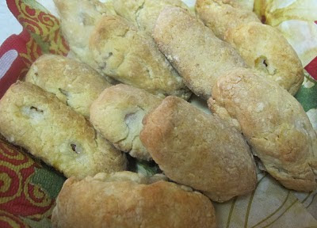

home
fleisch perishky
basicly pizza pockets
ingredients
- 1/3 cup of water
- 1 tsp of sugar
- 1 tsp unflavored gelatin
- 1 tbsp of yeast
- 1/4 cup of white bean flour
- 1/4 cup of brown rice flour
- 1/4 cup of potato starch
- 1/4 of sweet rice flour
- 1 tsp of zanthan gum
- 1/4 cup of butter
- 1 egg yolk
- some farmers sausage
directions
- mix 1/3 cup warm water with sugar and gelatin, sprinkle yeast on top, stir and let proof until doubled in volume
- mix all the dry ingredients together and then cut in butter
- add beaten egg yolk to yeast and stir
- add liquid to flour and mix together well
- if dough is sticky add a little more sweet rice flour and knead lightly on a floured (with sweet rice flour) until smooth
- dough will be very soft and difficult to roll out, i found it worked well to pinch off a piece of dough and form it around the piece of sausage
- place on pan and bake at 400'f for about 15/20 minutes until light brown
here it is finished
